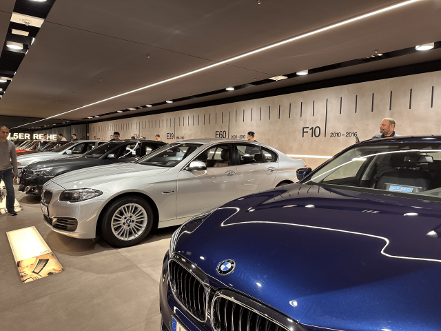
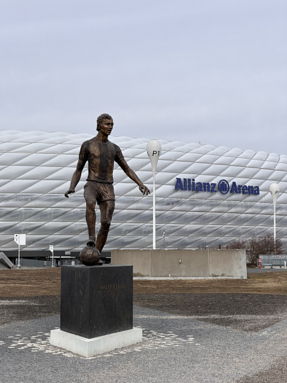

💡 慕尼黑獨旅行前懶人包 💡 Quick Info
章節導覽Table of Contents
🛑 慕尼黑獨旅防雷與隱藏密技 🛑 Solo Travel Hacks & Hidden Tips
💶 週日博物館只要 1 歐元€1 Museum Sundays
雖然週日商店不開門，但這天卻是逛博物館的黃金日！慕尼黑各大州立博物館（如老繪畫陳列館、巴伐利亞國立博物館等）在星期天門票統統只要 1 歐元，是獨旅者大省預算的完美時機。 Though shops are closed, Sundays are golden for museums! Major state museums in Munich (e.g., Alte Pinakothek, Bavarian National Museum) cost only €1 on Sundays. Perfect for budget solo travelers.
🍺 啤酒花園自帶食物的秘密Beer Garden Picnic Hack
慕尼黑的傳統啤酒花園（Biergarten）通常分兩區。只要你坐在自帶食物區（Brotzeit-Bereich），並向店家點一杯飲料/啤酒，你就可以合法、正當地拿出自己從超市買來的香腸或食物大快朵頤，體驗最道地的巴伐利亞野餐風情！ Traditional Munich beer gardens usually have two zones. If you sit in the Bring-Your-Own-Food Zone (Brotzeit-Bereich) and order at least one drink/beer, you can legally and openly eat your own supermarket sausages and food. Enjoy a true Bavarian picnic!
🗺️ 必做體驗：慕尼黑 24 大絕美景點 🗺️ Must-Do: 24 Beautiful Spots in Munich
慕尼黑不僅擁有奢華的王宮與古典教堂，更有全球首屈一指的科技博物館與廣闊的綠地公園。以下整理出你此生必訪的 24 大經典地標： Munich boasts not only luxurious palaces and classical churches but also world-leading science museums and vast green parks. Here are the 24 classic landmarks you must visit:
 王宮城堡Castles
王宮城堡Castles
1. 慕尼黑王宮 (Residenz München)1. Munich Residenz
德國最大的城市宮殿，曾是巴伐利亞君主們的居所。內部包含文藝復興、巴洛克與洛可可等多重風格，壯麗的「古物館 (Antiquarium)」大廳絕對是視覺焦點。 The largest city palace in Germany, formerly the residence of Bavarian monarchs. Featuring Renaissance, Baroque, and Rococo styles, the magnificent "Antiquarium" hall is the absolute visual highlight.
💭 我的感受：💭 Bryan's take: 用超划算的價格，賞盡慕尼黑不同時期風格迥異的王室之巔。若要聽導覽機，至少預留三小時哦！另外我覺得珍寶館可以不用去，如果您剛好有巴伐利亞國家博物館的行程～～ A great value to see the royal pinnacle of Munich. Set aside at least 3 hours if using the audio guide! Skip the Treasury if you're already going to the Bavarian National Museum~~
 公園 / 免費Parks / Free
公園 / 免費Parks / Free
2. 英國花園 (Englischer Garten)2. English Garden
比紐約中央公園還大的都市綠肺！夏季時充滿日光浴與野餐的人潮，中國塔旁的露天啤酒花園更是體驗慕尼黑生活節奏的絕佳去處。 An urban green lung larger than NY's Central Park! Full of sunbathers and picnickers in summer. The beer garden by the Chinese Tower is perfect for experiencing Munich's pace of life.
💭 我的感受：💭 Bryan's take: 真的很美很適合放空的公園，特別是在潺潺小溪的另一側，欣賞那在山丘上有名的白色涼亭！ A really beautiful park for zoning out, especially on the other side of the babbling brook, admiring the famous white pavilion on the hill!
 博物館 / 週日1€Museum / Sun. 1€
博物館 / 週日1€Museum / Sun. 1€
3. 巴伐利亞國立博物館 (Bayerisches Nationalmuseum)3. Bavarian National Museum
德國最重要的文化歷史博物館之一，館藏豐富的象牙雕刻、掛毯與中世紀武器，是深度了解南德與巴伐利亞歷史的藝術殿堂。 One of Germany's most important cultural history museums. Rich collections of ivory carvings, tapestries, and medieval weapons. An art palace to deeply understand South German and Bavarian history.
💭 我的感受：💭 Bryan's take:
展覽從史前時代到近代的巴伐利亞歷史與珍品，簡直是慕尼黑王宮珍寶館的放大版。非常之大，若要細看一定要預留一整天！
💡 每週日全天門票只要 1€。
From prehistory to modern Bavarian treasures, it's like a magnified version of the Residenz Treasury. So huge, you need a full day to see it all!
💡 Entry is just €1 on Sundays.
 宗教建築 / 登高 / 免費Church / View / Free
宗教建築 / 登高 / 免費Church / View / Free
4. 聖母教堂 (Frauenkirche)4. Frauenkirche
慕尼黑最具標誌性的雙洋蔥圓頂教堂。傳說中教堂內部地板上留有魔鬼的腳印「魔鬼的腳印 (Teufelstritt)」，增添了一抹神祕色彩。 Munich's iconic double-onion domed church. Legend says the "Devil's Footstep (Teufelstritt)" is left on the floor inside, adding a touch of mystery.
💭 我的感受：💭 Bryan's take: 極為醒目的地標建築，不過室內沒什麼裝潢讓我有點意外，但至少參觀不用錢。登塔才要錢，至於是否登塔見仁見智，有電梯直接到頂樓，但不是戶外觀景台(有玻璃罩著)，而且拍不到完整的聖母教堂。不過有冷氣是件好事：） Striking landmark, though the interior is surprisingly plain. Free to enter; tower costs money. Tower has an elevator to the top, but it's enclosed by glass, so you can't snap the whole church. Good thing it has AC though :)
 特色景點 / 免費Special / Free
特色景點 / 免費Special / Free
5. 冰溪衝浪點 (Eisbachwelle)5. Eisbachwelle
位於英國花園南端邊緣，這條人工河流製造出了連續的急流波浪，一年四季都有衝浪好手在此挑戰極限，是慕尼黑最獨特的街頭奇景。 Located at the southern edge of the English Garden. This artificial river creates continuous rapids where surfers challenge their limits year-round. Munich's most unique street spectacle.
💭 我的感受：💭 Bryan's take: 你知道在慕尼黑這歐洲的中心，也有衝浪的地方嗎？如果剛好散步到英國花園，不妨晃過來看看吧～ Did you know there's a surfing spot right in the center of Europe in Munich? If you're strolling in the English Garden, definitely swing by to check it out~
 公共建築 / 免費Public Bldg / Free
公共建築 / 免費Public Bldg / Free
6. 瑪麗亞廣場 (Marienplatz)6. Marienplatz
自 1158 年起便是慕尼黑的心臟地帶。廣場中央矗立著瑪麗亞圓柱，四周被新舊市政廳等華麗歷史建築環繞，終年熱鬧非凡。 The heart of Munich since 1158. The Marian column stands in the center, surrounded by ornate historic buildings like the New and Old Town Halls. Bustling all year round.
💭 我的感受：💭 Bryan's take: 慕尼黑最知名的廣場，也是舊城區的交匯。這裡也是觀賞新市政廳壁鐘表演的絕佳點唷！ Munich's most famous square and the junction of the old town. Also the perfect spot to watch the New Town Hall's glockenspiel show!
 公共建築 / 登高Public Bldg / View
公共建築 / 登高Public Bldg / View
7. 新市政廳 (Neues Rathaus)7. New Town Hall
這座壯觀的新哥德式建築最著名的就是每天定時演出的「木偶報時鐘 (Glockenspiel)」，重現了巴伐利亞大公的婚禮場景。 This spectacular Neo-Gothic building is famous for its daily "Glockenspiel" show, reenacting the wedding of a Bavarian Duke.
💭 我的感受：💭 Bryan's take: 室內有如走進霍格華茲的走廊裡，重點是完全免費(除非想上鐘塔)！另外還有絕美的市政廳圖書館(但開放時間極為稀少)。資訊都可以在下面連結找到哦！找個沒鎖的門就勇敢的走進去吧～ The interior feels like walking into Hogwarts corridors, and it's completely free (unless you go up the tower)! There's also a stunning library inside (rarely open). Find a door that's not locked and just walk in bravely~
 宗教建築 / 登高Church / View
宗教建築 / 登高Church / View
8. 聖彼得教堂 (St. Peter)8. St. Peter's Church
慕尼黑最古老的教區教堂，被當地人親切地稱為「老彼得 (Alter Peter)」。內部裝飾華麗，擁有精美的巴洛克式主祭壇。 Munich's oldest parish church, affectionately called "Old Peter". The interior is magnificently decorated with a beautiful Baroque high altar.
💭 我的感受：💭 Bryan's take: 上塔樓要付費，但絕對值得！雖然有網子，但格子不小，能拍到明信片裡的風景(瑪麗亞廣場+新市政廳+聖母教堂)。 Going up the tower costs money, but it's absolutely worth it! You can snap postcard-perfect views of Marienplatz, the New Town Hall, and Frauenkirche through the wide netting.
 公園 / 免費Parks / Free
公園 / 免費Parks / Free
9. 奧林匹亞公園 (Olympiapark München)9. Olympic Park
專為 1972 年慕尼黑奧運而建，其如同蜘蛛網般的波浪形玻璃帳篷屋頂設計，至今看來依然極具前衛與未來感。 Built for the 1972 Munich Olympics. Its spiderweb-like undulating glass tent roof design still looks incredibly avant-garde and futuristic today.
💭 我的感受：💭 Bryan's take: 非常適合慢跑或散步，建築與自然的景觀融合的恰到好處，非常推薦一訪！ Great for jogging or strolling. The architecture and natural landscape blend perfectly. Highly recommended!
 登高Viewpoint
登高Viewpoint
10. 奧林匹亞塔 (Olympiaturm)10. Olympic Tower
高達 291 公尺的電視塔，是慕尼黑最高建築。頂部的觀景台提供了無死角的 360 度全景，天氣晴朗時景色無與倫比。 At 291 meters, this TV tower is Munich's tallest building. The observation deck offers a seamless 360-degree panorama, unparalleled on a clear day.
💭 我的感受：💭 Bryan's take:
視野真的非常非常好，甚至可以看到南方地平線的阿爾卑斯山！
⚠️ 暫時關閉，預計2027年第一季再次開放！
The view is exceptionally good. You can even see the Alps on the southern horizon!
⚠️ Temp closed. Reopening expected in Q1 2027!
 飲食餐廳 / 免費入內Dining / Free Entry
飲食餐廳 / 免費入內Dining / Free Entry
11. 皇家啤酒屋 (Hofbräuhaus München)11. Hofbräuhaus
全世界最著名的啤酒館，擁有近五百年的歷史。穹頂繪滿壁畫的大廳裡，每天都有穿著傳統服飾的巴伐利亞樂隊熱情演奏。 The world's most famous beer hall with nearly 500 years of history. Under the frescoed vaulted ceilings, traditional Bavarian bands play enthusiastically every day.
💭 我的感受：💭 Bryan's take: 這裡不只能喝啤酒，也有道地餐點，如豬腳、鹼水結等～當然還有最有特色的駐店樂團！不過 Hofbräuhaus 其實是連鎖品牌，不一定要人擠人啦(但只有這裡有樂團就是)。 Not just beer, but authentic meals like pork knuckles and pretzels! The resident band is the highlight! Note that Hofbräuhaus is a chain, so you don't have to squeeze in here (but only this one has the band).
 宗教建築 / 免費Church / Free
宗教建築 / 免費Church / Free
12. 阿桑教堂 (Asamkirche)12. Asamkirche
隱身在鬧區街道旁的南德洛可可式晚期代表作。這座私人教堂空間極為狹長，但內部卻佈滿了極其繁複華麗的金箔與壁畫裝飾。 A masterpiece of late South German Rococo hidden in a bustling street. This private church is very narrow but covered in incredibly elaborate and ornate gold leaf and frescoes.
💭 我的感受：💭 Bryan's take: 室內小而精緻的教堂，而且還是兩兄弟建造的，非常有看頭的慕尼黑隱藏景點。 Small but exquisite interior, built by two brothers. A very impressive hidden gem in Munich.
 王宮城堡 / 花園免費Castle / Garden Free
王宮城堡 / 花園免費Castle / Garden Free
13. 寧芬堡宮 (Schloss Nymphenburg)13. Nymphenburg Palace
巴伐利亞統治者的夏宮，擁有華麗的巴洛克式對稱立面。後方廣達 200 公頃的幾何法式花園與湖泊，是天鵝與水鳥們的天堂。 The summer palace of Bavarian rulers, featuring a gorgeous symmetrical Baroque facade. The 200-hectare French formal garden and lake behind it is a paradise for swans and water birds.
💭 我的感受：💭 Bryan's take: 宮殿本身我覺得若去過王宮可以不用進去，但馬車博物館非常精彩！後面巨大的免費花園也非常適合散步唷！ If you've seen the Residenz, you might skip the palace interior, but the Carriage Museum is amazing! The huge free garden is also perfect for a stroll!
 宗教建築 / 免費Church / Free
宗教建築 / 免費Church / Free
14. 聖米歇爾教堂 (St. Michael Kirche)14. St. Michael's Church
阿爾卑斯山以北最大的文藝復興式教堂，擁有當時世界第二大的無支柱拱頂（僅次於羅馬聖伯多祿大殿）。巴伐利亞著名的「童話國王」路德維希二世便長眠於此地下墓室。 The largest Renaissance church north of the Alps, with the second-largest freestanding vault in the world at the time (after St. Peter's in Rome). The famous "Fairy Tale King" Ludwig II rests in its crypt.
💭 我的感受：💭 Bryan's take: 壯觀的幾何洛可可/巴洛克式屋頂非常精彩，是諾伊豪瑟大街上值得一看的教堂！ The spectacular geometric Rococo/Baroque ceiling is magnificent. A church worth seeing on Neuhauser Strasse!
 宗教建築 / 免費Church / Free
宗教建築 / 免費Church / Free
15. 伯格塞爾教堂 (Bürgersaalkirche)15. Bürgersaalkirche
外觀極為樸素的紅磚建築，內部卻分為上下兩層截然不同的空間。下層莊嚴肅穆，上層大堂則裝飾著明亮的巴洛克風格壁畫。 A plain red-brick exterior hides two completely different levels inside. The lower level is solemn and austere, while the upper hall is adorned with bright Baroque frescoes.
💭 我的感受：💭 Bryan's take: 位於二樓的大堂非常雄偉壯觀，從外面根本看不出來呢！ The upper hall is incredibly majestic, you'd never guess it from the outside!
 公共建築 / 免費Public Bldg / Free
公共建築 / 免費Public Bldg / Free
16. 正義宮 (Justizpalast München)16. Palace of Justice
建於 19 世紀末的新巴洛克式巨作，目前為巴伐利亞邦司法部所在地。著名的反納粹組織「白玫瑰」成員，就是在此地受審。 A Neo-Baroque masterpiece built in the late 19th century, currently the Bavarian Ministry of Justice. Members of the famous anti-Nazi group "White Rose" were tried here.
💭 我的感受：💭 Bryan's take:
四面對稱的巨大中央大廳非常壯觀，也能參觀從前在納粹時期白玫瑰慘案的紀念展區。
💡 免費入內，但入口處需經過安檢。
The massive symmetrical central hall is spectacular. You can also visit the White Rose memorial exhibition.
💡 Free entry, but requires security check.
 博物館Museum
博物館Museum
17. 德意志博物館 (Deutsches Museum)17. Deutsches Museum
全球最大、最重要的科技與科學博物館，坐落於伊薩爾河的一座小島上。從採礦、航太、古典樂器到早期的電腦發明應有盡有。 The world's largest and most important science and technology museum, located on an island in the Isar River. Covers everything from mining, aerospace, classical instruments to early computers.
💭 我的感受：💭 Bryan's take: 科工/博館放大版！展覽的是德國從古至今的科學工藝。我記得最酷的還有一張第一次發現核分裂的桌子！如果想慢慢看，絕對不要以為能在一天內看完。我可是花了兩個整天呢～ A massive science museum showcasing German technology through the ages. Seeing the desk where nuclear fission was discovered was amazing! Don't expect to finish it in one day. I spent two full days here~
 博物館 / 週日1€Museum / Sun. 1€
博物館 / 週日1€Museum / Sun. 1€
18. 老繪畫陳列館 (Alte Pinakothek)18. Alte Pinakothek
世界最古老、館藏最豐富的美術館之一。專注於 14 至 18 世紀的歐洲大師畫作，包含達文西、拉斐爾與魯本斯等人的真跡。 One of the oldest and richest art galleries in the world. Focuses on 14th to 18th-century European masters, including authentic works by Da Vinci, Raphael, and Rubens.
💭 我的感受：💭 Bryan's take:
光影斑斕的巨大樓梯、梵谷的其中一幅向日葵都能在這裡找到！
💡 每週日全天門票只要 1€。
The massive light-filled staircase and one of Van Gogh's Sunflowers can be found here!
💡 Entry is just €1 on Sundays.
 博物館 / 週日1€Museum / Sun. 1€
博物館 / 週日1€Museum / Sun. 1€
19. 現代藝術畫廊 (Pinakothek der Moderne)19. Pinakothek der Moderne
歐洲最大的現代藝術、建築與設計博物館之一。建築本身就是一件簡約的幾何藝術品，內部常有極具啟發性的前衛特展。 One of Europe's largest museums of modern art, architecture, and design. The building itself is minimalist geometric art, housing inspiring avant-garde exhibitions.
💭 我的感受：💭 Bryan's take:
很新潮很酷的現代美術館。我覺得裡頭也有一些比較貼近生活的應用藝術，不會說都看不懂唷～～
💡 每週日全天門票只要 1€。
Very trendy modern art museum. Contains applied art close to daily life, so it's not totally incomprehensible~~
💡 Entry is just €1 on Sundays.
 博物館 / 週日1€Museum / Sun. 1€
博物館 / 週日1€Museum / Sun. 1€
20. 州立文物博物館 (Glyptothek)20. Glyptothek
慕尼黑最古老的公共博物館，建築設計仿造古希臘神廟。館內專門收藏並展出古希臘與古羅馬時期的精美大理石雕塑。 Munich's oldest public museum, modeled after ancient Greek temples. Exclusively houses exquisite marble sculptures from ancient Greek and Roman periods.
💭 我的感受：💭 Bryan's take:
展館不大，就繞一圈而已，但雕塑非常精彩！記得，同一張票還可以去對面的州立古典博物館 (Staatliche Antikensammlungen) 唷！
💡 每週日全天門票只要 1€。
Small gallery, just a circle, but the sculptures are amazing! Remember, the same ticket gets you into the State Collections of Antiquities across the square!
💡 Entry is just €1 on Sundays.
 博物館 / 週日1€Museum / Sun. 1€
博物館 / 週日1€Museum / Sun. 1€
21. 州立埃及藝術博物館 (Staatliches Museum Ägyptischer Kunst)21. State Museum of Egyptian Art
這是一座隱藏在地下的現代化博物館！透過採光極佳的玻璃天井與巧妙的光影設計，將幾千年前的古埃及文物襯托得極具神秘感。 A modern museum hidden underground! Excellent skylights and clever lighting design highlight the thousands-of-years-old ancient Egyptian artifacts with great mystery.
💭 我的感受：💭 Bryan's take:
想不到巴伐利亞為何有埃及的文物吧，你來了就知道為什麼了～當然展品不若大英博物館，但動線規劃的很好，有半天時間的話不妨來參觀～～
💡 每週日全天門票只要 1€。
Wondering why Bavaria has Egyptian artifacts? Come and find out! Not as vast as the British Museum, but well-designed. Worth a half-day visit~~
💡 Entry is just €1 on Sundays.
 公共建築 / 免費Public Bldg / Free
公共建築 / 免費Public Bldg / Free
22. 特雷西婭草坪 (Theresienwiese)22. Theresienwiese
一片佔地高達 42 公頃的空曠廣場，西側矗立著巨大的「巴伐利亞雕像 (Bavaria Statue)」。平時空曠寧靜，到了慶典季節則化身狂歡中心。 A vast 42-hectare open space. The massive "Bavaria Statue" stands on its west side. Quiet usually, but transforms into a carnival center during festival seasons.
💭 我的感受：💭 Bryan's take: 乍看沒什麼，但其實正是大名鼎鼎「慕尼黑啤酒節」的舉辦場地！不同季節也會舉辦各式活動，比如春季會有全德國最大的跳蚤市場、冬季是其中一個聖誕市集的主場地等～ Looks empty at first glance, but it's the famous Oktoberfest grounds! Hosts events year-round: Germany's largest flea market in spring, a huge Christmas market in winter~

博物館Museum23. 寶馬博物館 (BMW Museum)23. BMW Museum
展示 BMW 汽車、機車及引擎技術的百年歷史發展。建築外觀宛如一個巨大的銀色碗，與旁邊的四缸大樓總部相映成趣，是車迷必訪的朝聖地。 Showcases the 100-year history of BMW cars, motorcycles, and engine technology. Shaped like a giant silver bowl next to the 4-cylinder HQ building, it's a mecca for car fans.
💭 我的感受：💭 Bryan's take: 就算不是車迷，看不同時期BMW的車子也是蠻有趣的，而且展場做得很好～ Even if you're not a gearhead, seeing BMW cars from different eras is quite fun, and the exhibition is well done~

球場Stadiums24. 安聯球場 (Allianz Arena)24. Allianz Arena
德甲豪門拜仁慕尼黑 (FC Bayern Munich) 的主場。外觀由數千個菱形氣墊構成，夜晚點燈時極為壯觀，是全世界最現代化的足球聖地之一。 Home of Bundesliga giant FC Bayern Munich. The exterior is made of thousands of diamond-shaped air cushions. Spectacular when lit up at night. One of the world's most modern football meccas.
💭 我的感受：💭 Bryan's take: 若來的時候沒有球賽，裏頭的博物館也可以看看唷～～當然若你是 FC Bayern 迷是一定要進來的！ Even with no match on, the museum inside is worth a look~~ If you're a FC Bayern fan, it's an absolute must!
🏔️ 慕尼黑近郊一日遊：阿爾卑斯山腳下的大冒險 🏔️ Day Tours: Adventures at the Foot of the Alps
慕尼黑是前往德國南部屋脊與童話大道的完美玄關。你可以利用超划算的「巴伐利亞邦票 (Bayern Ticket)」搭乘火車自行前往，或報名慕尼黑車站出發的省心一日團： Munich is the perfect gateway to the roof of Southern Germany and the Romantic Road. Use the super valuable "Bayern Ticket" to go by train yourself, or join hassle-free day tours from Munich station:
📍 自行前往推薦 (DB 德鐵 / 公車)DIY Travel (DB Trains / Bus)
達赫集中營 (KZ-Gedenkstätte Dachau)Dachau Concentration Camp
⏱️ 約 20 分鐘~20m納粹德國建立的第一座集中營，現為紀念館與反思歷史的重要遺跡。 The first concentration camp built by Nazi Germany, now an important memorial to reflect on history.
🌐 官網資訊與開放時間🌐 Official Info & Hours
施萊斯海姆宮 (Schloss Schleißheim)Schleißheim Palace
⏱️ 約 35 分鐘~35m巴伐利亞選帝侯的雄偉夏宮，擁有華麗對稱的巴洛克庭園。 Magnificent summer palace of the Bavarian Electors, with a gorgeous Baroque garden.
🌐 官網資訊🌐 Official Info
新天鵝堡 (Neuschwanstein)Neuschwanstein Castle
⏱️ 約 2.5 小時~2.5 hrs迪士尼城堡的原型！座落於阿爾卑斯山腳下，德國最夢幻的地標。 The prototype for the Disney Castle! Located at the foot of the Alps, Germany's most dreamy landmark.
楚格峰 (Zugspitze)Zugspitze
⏱️ 約 3 小時~3 hrs德國最高峰，可搭乘齒軌火車或絕美高空纜車登頂，將德國與奧地利群山盡收眼底。 Germany's highest peak. Take a cogwheel train or stunning cable car to the top. Panoramic views of German and Austrian mountains.
布格豪森城堡 (Burg Burghausen)Burghausen Castle
⏱️ 約 2 小時~2 hrs不愧是金氏紀錄認證全世界最長的城堡，走過五個庭院每個都令人印象深刻～ Guinness World Record for the longest castle in the world. Walking through its five courtyards is truly impressive~
國王湖 (Königssee)Königssee
⏱️ 約 3.5 小時~3.5 hrs德國最深、最清澈的冰川湖，四周被高聳岩壁環繞，被譽為德國九寨溝。 Germany's deepest and clearest glacial lake, surrounded by towering cliffs. Often called the Jiuzhaigou of Germany.
薩爾斯堡 (Salzburg, 奧地利)Salzburg (Austria)
⏱️ 約 2 小時~2 hrs莫札特的故鄉，音樂之都，老城區被列為世界文化遺產。可使用拜揚邦票前往！ Hometown of Mozart, the city of music. The old town is a World Heritage site. You can get there using the Bayern Ticket!
💡 站長筆記：Note: 最熱門的跨國一日遊選擇！一天能把市區主要景點逛完，非常推薦購買當地的薩爾斯堡卡。 The most popular cross-border day trip! You can cover the main spots in a day. Highly recommend buying the Salzburg Card locally.
羅滕堡 (Rothenburg ob der Tauber)Rothenburg ob der Tauber
⏱️ 約 2.5 小時~2.5 hrs浪漫大道上保存最完整的中世紀童話古城，漫步半木造建築交織的石板路。 The best-preserved medieval fairy-tale town on the Romantic Road. Stroll along cobblestones woven with half-timbered houses.
💡 站長筆記：Note: 彷彿走入中世紀的德國，最喜歡在城牆上漫步。別擔心高溫，這裡的城牆步道是有屋頂的唷！ Like stepping into medieval Germany. Walking the wall is my favorite. Don't worry about the heat, the wall walkway has a roof!
紐倫堡 (Nürnberg)Nuremberg (Nürnberg)
⏱️ 約 1 小時 50 分~1 hr 50m擁有德國最著名的聖誕市集，以及神聖羅馬帝國的宏偉城堡與二戰歷史審判地。 Home to Germany's most famous Christmas market, the majestic castle of the Holy Roman Empire, and WWII trial sites.
💡 站長筆記：Note: 有中世紀的浪漫、也有二戰歷史的沉重，非常有厚度的地方～ Has medieval romance and heavy WWII history. A place with great depth~
奧格斯堡 (Augsburg)Augsburg
⏱️ 約 30-50 分鐘~30-50m這裡最知名的大概就是木偶劇院了！這裡有個博物館一定要去(雖然都是德文的)，另外由於以前是重要的主教區，大教堂非常雄偉，也一定要去！ Most famous for its puppet theater! There's a must-visit museum (mostly in German). Also, as a former major bishopric, the Cathedral is incredibly majestic!
雷根斯堡 (Regensburg)Regensburg
⏱️ 約 1.5 小時~1.5 hrs二戰中未受破壞的多瑙河畔古城，被列為世界文化遺產，擁有迷人的中世紀石橋。 Undamaged in WWII, this ancient city by the Danube is a World Heritage site with a charming medieval stone bridge.
💡 站長筆記：Note: 跨多瑙河的拱橋真的好美，也能去郊外的瓦爾哈拉神殿俯瞰蜿蜒壯闊的多瑙河～ The arch bridge over the Danube is beautiful. Go to Walhalla outside town to overlook the winding, majestic Danube~
🚐 懶人首選：慕尼黑出發直達一日團 Lazy Way: Direct Day Tours from Munich
德國國鐵（DB）雖發達但近期經常大誤點或罷工取消，且前往新天鵝堡或國王湖等山區多需轉乘數次客運，一旦錯過接駁會非常麻煩。選擇車站旁集合出發的一日專車團，是降低風險、提高獨旅效率的聰明決策。 DB trains are developed but lately suffer from severe delays and strikes. Going to Neuschwanstein or Königssee often requires multiple bus transfers. Booking a direct guided day tour is a smart way to minimize risk and maximize efficiency.
新天鵝堡與林德霍夫宮一日遊Neuschwanstein & Linderhof Tour
專車一次解鎖巴伐利亞國王路德維希二世的兩大夢幻城堡。 Unlock King Ludwig II's two dreamy castles in one trip via private bus.
國王湖與魔法森林一日遊Königssee & Magic Forest Tour
搭乘阿爾卑斯山腳下的環保電動船，探索深谷中的秘境湖泊。 Take an eco-friendly electric boat at the foot of the Alps to explore the hidden lake in the deep valley.
羅滕堡、哈爾堡與浪漫之路之旅Rothenburg & Romantic Road Tour
舒適乘坐空調客車，沿著巴伐利亞最浪漫的公路造訪中世紀童話小鎮。 Ride comfortably in an AC coach along Bavaria's most romantic road to visit medieval fairy-tale towns.
🎉 年度慶典：三大必訪狂歡時刻 🎉 Annual Festivals: 3 Must-Visit Carnivals
感受巴伐利亞最純粹的熱情與酒精 Feel the Purest Bavarian Passion & Beer
慕尼黑人對於慶典有著極致的狂熱！這裡不僅有舉世聞名的十月啤酒節，連春夏季也有充滿傳統風情的民俗市集與環保藝術節，是體驗大口吃肉、大口喝酒的最佳時機。 Munich locals have an extreme passion for festivals! Not only the world-famous Oktoberfest, but spring and summer also feature traditional folk markets and eco-art festivals. It's the best time to experience feasting and drinking.
源於 1810 年王室婚禮，是全球最大民俗慶典。每年秋季於特蕾西婭草坪舉辦，吸引逾六百萬人次。現場設有各大酒廠的巨型帳篷，民眾常穿傳統服飾大口飲酒、享用烤半雞並參與嘉年華。 Originating from an 1810 royal wedding, it's the world's largest folk festival. Held every autumn at Theresienwiese, attracting over 6 million people. Features giant brewery tents, traditional costumes, half-chickens, and carnival rides.
相較於動輒擠滿幾萬人、需要提前幾個月訂位大帳篷的「啤酒節」，這是一個更具在地生活感、步調悠閒的傳統露天市集。這裡有古董、手工藝品、舊書攤和傳統骨董旋轉木馬，非常適合尋寶。 Compared to the crowded Oktoberfest, this is a much more local and relaxed traditional open-air market. Features antiques, crafts, old book stalls, and vintage carousels. Perfect for treasure hunting.
一個融合了世界音樂、戶外劇場、環保藝術展覽與多元文化市集的另類大型慶典。冬季場更是慕尼黑最具特色的「非傳統」聖誕市集代表，充滿濃厚的波希米亞氛圍與有機美食。 An alternative festival blending world music, outdoor theater, eco-art, and multicultural markets. The winter edition is Munich's most unique "non-traditional" Christmas market, full of bohemian vibes and organic food.
🚆 交通全攻略：機場快線、市區移動與邦票解析 🚆 Transport Guide: Airport, City & Bayern Ticket
📍 從慕尼黑國際機場 (MUC) 出發From Munich Airport (MUC)
近郊鐵路 (S-Bahn) S1 / S8 線S-Bahn (S1 / S8)
官方直達鐵路Official Direct Train🛫 起點🛫 Start機場航廈地下車站Airport Underground Station
🏁 終點🏁 End慕尼黑中央車站 (München Hbf) 及市區各大站Munich Hbf & Major City Stations
⏱️ 時間⏱️ Time約 45 分鐘~45 mins
⏳ 班距⏳ Freq.兩線交替，每 10 分鐘一班Every 10 mins (alternating)
💶 價格💶 Price單程 15.1€ (購買涵蓋 Zone M-5 的車票)Single 15.1€ (Zone M-5 ticket)
漢莎航空機場快線巴士 (Lufthansa Express Bus)Lufthansa Express Bus
免扛行李上下樓No Stairs for Luggage🛫 起點🛫 Start機場航廈外巴士站Airport Bus Stop
🏁 終點🏁 End慕尼黑中央車站Munich Central Station
⏱️ 時間⏱️ Time約 45 分鐘~45 mins
⏳ 班距⏳ Freq.每 20 分鐘一班Every 20 mins
💶 價格💶 Price單程 14€ (提前網路購票較便宜)Single 14€ (Cheaper online)
📍 慕尼黑市區交通與票券系統 (MVV)Munich City Transit (MVV)
MVV 大眾運輸網絡MVV Transit Network
慕尼黑的市區交通由 MVV 統一營運，涵蓋了 S-Bahn (近郊鐵路)、U-Bahn (地下鐵)、Tram (路面電車) 與 Bus (公車)。慕尼黑市中心絕大部分的景點（包含寧芬堡宮）都在最核心的 Zone M (M區) 內。 Munich's transit is run by MVV, including S-Bahn, U-Bahn, Tram, and Bus. Most city center attractions (including Nymphenburg) are within the core Zone M.
💳 慕尼黑旅遊通票與「德鐵月票」超級神券 Munich Passes & The "Deutschland-Ticket"
慕尼黑城市通票 (Munich City Pass)Munich City Pass
適合對象：Best for:
想要瘋狂跑遍室內博物館與皇宮的重度打卡者。Heavy explorers visiting multiple museums and palaces.
包含內容：Includes:
免費參觀 40+ 景點（如慕尼黑王宮、寧芬堡等，甚至可選新天鵝堡方案）、免費隨上隨下巴士，並可加購公共交通。
Free entry to 40+ attractions (Residenz, Nymphenburg, optional Neuschwanstein), free HOHO bus, optional public transit.
慕尼黑卡 (Munich Card)Munich Card
適合對象：Best for:
主要在外頭走跳、看建築外觀，不一定每個博物館都要進去的自由靈魂。Free souls who prefer wandering outside, looking at architecture, and not entering every museum.
包含內容：Includes:
享有眾多景點折扣優惠，並「直接包含」免費無限次搭乘 MVV 公共交通。
Discounts on many attractions and "directly includes" unlimited free rides on MVV public transit.
巴伐利亞邦票 (Bayern Ticket)Bayern Ticket (Bavaria Ticket)
適合對象：Best for:
當天需要前往近郊（如國王湖、新天鵝堡、薩爾斯堡、紐倫堡）長途移動的人。Those traveling long distances to suburbs (e.g., Königssee, Neuschwanstein, Salzburg) on that day.
包含內容：Includes:
當日免費無限次搭乘巴伐利亞邦內「所有」的慢車 (RE, RB)、S-Bahn、U-Bahn、公車與電車（不含 ICE 等高鐵）。越多人共乘分攤越便宜！
Unlimited free rides on "all" regional trains (RE, RB), S-Bahn, U-Bahn, buses, and trams in Bavaria for a day (excludes high-speed ICE). Cheaper with group sharing!
德國月票 (Deutschland-Ticket)Deutschland-Ticket (D-Ticket)
終極省錢大絕Ultimate Saver
適合對象：Best for:
行程跨越德國多個邦、旅行超過 3-5 天的旅人。Travelers crossing multiple states or traveling for more than 3-5 days.
包含內容：Includes:
訂閱制（可隨時取消）。一個月內全德國無限次搭乘所有的市內交通與慢車（RE, RB），是你玩遍德國（含新天鵝堡、國王湖交通）的無敵神卡！
Subscription (cancel anytime). Unlimited rides across Germany on all local transit and regional trains (RE, RB) for a month. The ultimate card for touring Germany!
⚠️ 注意：Note: 這是訂閱制服務。購買後請務必在規定期限內（通常是當月10號前）手動申請取消次月扣款。 This is a subscription. You MUST manually cancel before the deadline (usually the 10th of the month) to avoid being charged for the next month.
🚄 德鐵官網訂購月票🚄 Subscribe on DB Website🛏️ 住宿建議：精選火車站旁的高性價比避風港 🛏️ Accommodation: High-Value Stays Near Central Station
| 🛏️ 住宿飯店 / 青旅🛏️ Hostel/Hotel | 🔗 預訂連結🔗 Booking | 💰 平均房價參考💰 Est. Price | ⭐ 旅客評分⭐ Rating | 💡 站長為何推薦💡 Why Recommend |
|---|---|---|---|---|
| Wombat's City Hostel Munich Hbf 📍 Google Maps | EUR 35 - 70 / 晚night |
約 8.5 / 10 車站旁，機能極強 ~ 8.5 / 10 Next to Hbf, convenient |
就在慕尼黑中央車站旁，對於每天要搭火車跑一日遊的人超級方便。歐洲知名連鎖品牌，附設酒吧且極度安全。 Right next to Munich Hbf, super convenient for daily train trips. Famous European chain, has a bar and is extremely safe. | |
| Euro Youth Hotel 📍 Google Maps | EUR 30 - 60 / 晚night |
約 8.8 / 10 復古建築，酒吧歡樂 ~ 8.8 / 10 Vintage bldg, fun bar |
同樣緊鄰中央車站。建築本身極具古典氣息，內部卻是活力滿滿的青年聚落，一樓的酒吧氣氛極佳。 Also next to Hbf. Classic architecture outside, vibrant youth hub inside. The ground floor bar has an amazing atmosphere. | |
| The 4You Hostel & Hotel 📍 Google Maps | EUR 25 - 55 / 晚night |
約 8.2 / 10 安靜單純，早餐豐富 ~ 8.2 / 10 Quiet, great breakfast |
相比其他青旅，這裡更偏向商務旅館的寧靜感，非常適合不想被派對打擾的獨旅者。加購的自助早餐 CP 值極高。 More like a quiet business hotel, perfect for solos avoiding parties. The buffet breakfast add-on is incredible value. | |
| Jaeger´s Munich 📍 Google Maps | EUR 30 - 65 / 晚night |
約 8.0 / 10 交通樞紐，中規中矩 ~ 8.0 / 10 Transport hub, decent |
距離中央車站僅需步行 2 分鐘。雖然設施相對中規中矩，但若是為了每天搭火車衝景點，這地點無可挑剔。 Just a 2-min walk from Hbf. Facilities are standard, but the location is flawless if you catch trains daily. | |
| Wombat’s Munich Werksviertel 📍 Google Maps | EUR 40 - 80 / 晚night |
約 9.0 / 10 文青特區，全新現代 ~ 9.0 / 10 Hip area, modern & new |
Wombat's 在慕尼黑東站(Ost)旁的新館。位於充滿塗鴉與貨櫃屋的文創特區，設施極新且質感超高，治安也比中央車站好。 Wombat's new branch by Munich East (Ost). Located in a creative district full of graffiti and containers. Super new, high quality, and safer than Hbf. |
🍝 在地美食指南：巴伐利亞的豪邁味蕾 🍝 Local Cuisine: Bavarian Hearty Flavors
🍽️ 必吃美食Must-Eat Foods
來到慕尼黑，絕對要拋開熱量的束縛！大口吃肉與無限暢飲的啤酒，才是體驗南德生活最正確的姿勢： In Munich, abandon calorie counting! Eating meat and drinking endless beer is the correct way to experience Southern German life:
與水煮德式豬腳不同，巴伐利亞的烤豬腳外皮烤得極度酥脆（會卡滋作響），內裡豬肉軟嫩多汁。通常搭配馬鈴薯球（Knödel）與濃郁醬汁享用。 Unlike boiled knuckles, Bavarian roasted knuckles have extremely crispy skin and tender, juicy meat. Usually served with potato dumplings (Knödel) and rich gravy.
慕尼黑傳統早點。以小豬肉和香料製成，當地人傳統上「只在中午 12 點前食用」。剝除外衣後沾甜芥末醬，配白啤酒與扭結麵包（Brezn）是絕配。 Traditional Munich breakfast. Made of pork and spices, traditionally eaten "only before 12 PM". Peel the skin, dip in sweet mustard, and pair with wheat beer and a pretzel (Brezn).
啤酒屋極受歡迎的國民美食。外皮烤至金黃酥脆、香氣四溢，肉質鮮嫩，非常適合搭配一公升裝的巨無霸啤酒（Maß）。 A beloved popular dish in beer halls. Roasted to a golden crispy skin, fragrant and tender. Perfect with a 1-liter massive beer (Maß).
經典的巴伐利亞/奧地利甜點。將鬆餅煎好後撕成碎塊，撒上大量糖粉並搭配蘋果泥或莓果醬，口感鬆軟帶點蛋香微甜。 Classic Bavarian/Austrian dessert. Scrambled sweet pancakes sprinkled with powdered sugar, served with apple sauce or berry jam. Fluffy and sweet.
被譽為「德式起司通心麵」。現做的手工麵疙瘩拌入大量融化起司與香脆的洋蔥碎，口感濃郁邪惡卻讓人停不下來。 German mac and cheese. Handmade egg noodles mixed with loads of melted cheese and crispy fried onions. Rich, sinful, and addictive.
將慕尼黑啤酒與檸檬汽水以 1:1 混合，酒精濃度僅約 2%，帶有清爽的柑橘酸甜感，是當地人在炎熱午後啤酒花園的最愛。 A 1:1 mix of Munich beer and lemon soda. Only ~2% ABV, with a refreshing citrus sweet-sour taste. A local favorite in beer gardens on hot afternoons.
慕尼黑歷史最悠久的酒廠，至今仍使用傳統的木栓玻璃瓶裝瓶。其經典的 Helles（光標麥酒）麥香濃郁、泡沫綿密且收口極為清爽。 Munich's oldest brewery, still using traditional wooden barrel tapping in some places. Its classic Helles (pale lager) is malty, smooth, and incredibly refreshing.
🎒 獨旅實戰：友好餐廳與平價清單 Solo Guide: Friendly & Budget Restaurants
在慕尼黑想大口吃肉喝啤酒，一個人去也是完全沒問題的！以下 5 間特色店鋪，從經典酒館到平價熱食，非常適合獨旅者造訪： Want to feast on meat and beer alone in Munich? No problem! These 5 spots, from classic taverns to cheap eats, are perfect for solos:
| 🍴 餐廳名稱🍴 Restaurant Name | 💰 價格水平💰 Price Level | 📍 交通位置📍 Location | 💡 站長推薦理由💡 Why Recommend |
|---|---|---|---|
| Augustiner-Keller 📍 在地圖開啟Open in Maps |
中價位Mid-Range 巨型傳統啤酒屋Giant Beer Garden |
靠近中央車站西側West of Hbf |
當地人最愛的啤酒花園之一，擁有巨大的戶外栗樹林區與溫暖的室內地窖。這裡的烤豬腳與皇帝煎餅極度美味，氣氛熱鬧但不會像皇家啤酒屋那樣擁擠觀光化。 A local favorite! Huge outdoor chestnut grove and cozy indoor cellar. Roasted knuckles and Kaiserschmarrn are super delicious. Lively but less tourist-packed than Hofbräuhaus. |
| Steinheil 16 📍 在地圖開啟Open in Maps |
低價位Low 超巨平價炸豬排Giant Cheap Schnitzel |
國王廣場/慕尼黑工大旁Near Königsplatz / TUM |
學區附近的神級平價餐廳。主打比臉還大的德式炸豬排（Schnitzel），附贈一大盤薯條與沙拉。價格便宜份量驚人，獨旅者絕對能吃撐。 God-tier budget restaurant near the university. Features face-sized German Schnitzel with huge fries and salad. Cheap with shocking portions, solo travelers will leave stuffed. |
| Restaurant Andy's Krablergarten 📍 在地圖開啟Open in Maps |
中價位Mid-Range 炸豬排專門店Schnitzel Specialist |
森德靈門 (Sendlinger Tor) 附近Near Sendlinger Tor |
除了慕尼黑烤肉外，這家的維也納炸豬排也極為出名，甚至可以選擇豬肉或火雞肉，搭配特製的起司蘑菇醬，是極度撫慰人心的 Comfort Food。 Besides Munich roast meats, their Wiener Schnitzel is famous. You can choose pork or turkey, paired with special cheese mushroom sauce. The ultimate comfort food. |
| Münchner Suppenküche 📍 在地圖開啟Open in Maps |
極低價位Very Low 市場熱湯專賣店Market Soup Shop |
穀物市場 (Viktualienmarkt) 內Inside Viktualienmarkt |
位於著名的穀物市場內。如果你不想吃大魚大肉，這家專賣各式西式濃湯與清湯的小店是完美的選擇。點碗熱湯配麵包，立吞區站著吃，非常愜意。 In the famous Viktualienmarkt. If you don't want heavy meat, this shop selling various soups is perfect. Grab a hot soup with bread and eat standing up at the counter. |
| Stragula Realwirtschaft 📍 在地圖開啟Open in Maps |
低價位Low 在地溫馨小酒館Cozy Local Tavern |
Westend 住宅區內Westend Area |
遠離觀光一級戰區的在地小酒館。氣氛溫暖昏暗，餐點以實惠的巴伐利亞家常菜為主，店員親切，一個人坐在吧檯喝杯啤酒非常自在。 A local tavern away from tourist zones. Warm and dim vibe, serving affordable Bavarian home cooking. Friendly staff. Great for sitting at the bar with a beer. |
🇩🇪 德國獨旅生存避雷箱Germany Survival Box
交通：單程車票必打卡Transit: Validate Tickets
德國大眾運輸車站沒有閘門，採「榮譽制」，但查票員神出鬼沒且罰款極重。若是購買單程票，上車前務必在月台的藍色或黃色小機器「打上時間印記 (Entwerten)」、電子票則要在「APP裡按開通 (Aktivieren)」。簡單辨別法就是車票上一定要有開始使用日期！沒打卡視同逃票！ German stations have no turnstiles (honor system), but inspectors are stealthy and fines are heavy. If buying paper singles, you MUST stamp them (Entwerten) in the small blue/yellow machines on platforms. For e-tickets, you must "Activate (Aktivieren)" in the App. Unstamped tickets = fare evasion!
建議下載 DB Navigator 或 MVV App 購買電子票，付款後自動啟用，完全不用找機器打卡，還不怕弄丟。 Use DB Navigator or MVV App for e-tickets. They activate automatically after payment—no machines needed!
作息：小心週日全面停擺Routine: Sunday Closures
德國嚴格執行「週日公休法規 (Sonntagsruhe)」。在星期天，所有的超市（包含 Aldi, Rewe）、藥妝店 (dm, Rossmann) 甚至百貨公司全部大門緊閉，街上宛如空城。 Germany strictly enforces "Sunday Rest (Sonntagsruhe)". All supermarkets (Aldi, Rewe), drugstores (dm, Rossmann), and malls are completely closed on Sundays. The streets look empty.
獨旅者務必在「週六傍晚前」採買好週末所需的糧食與水。若真的忘記，只能去中央火車站內或機場的少數超市搶購物資。 Stock up on food and water by Saturday evening! If you forget, your only hope is the few small supermarkets inside the main train station or airport.
環保：寶特瓶押金制 (Pfand)Eco: Bottle Deposit (Pfand)
在德國超市買瓶裝水或飲料，結帳時會多收 0.25€ 的「空瓶押金 (Pfand)」。喝完千萬不要丟進垃圾桶！這是一筆不小的隱藏開銷。 When buying bottled water/drinks, you are charged an extra 0.25€ "bottle deposit (Pfand)". Do NOT throw empty bottles in the trash! It adds up quickly.
將空瓶收集起來，帶回任何一間超市入口處的「退瓶機 (Pfandautomat)」，機器會吐出一張收據，拿去結帳櫃檯可以直接換回現金或折抵消費。 Return empty bottles to the "Pfandautomat" machines at supermarket entrances. It prints a receipt you can use for cash or discount at the checkout counter.

Bryan | Europe Solo Guide
「獨旅不是孤單，而是給自己一場完整的自由。」 "Solo travel is not about being lonely; it's about giving yourself complete freedom."
熱愛穿梭在歐洲老城區的石板路上與壯麗群山間。目前已獨自走訪 41 個歐洲國家，致力於將複雜的交通、住宿與隱藏景點，轉化為有溫度的獨旅攻略。希望這篇文章能幫你省下找資料的時間，把精力留給旅途中的美好。 I love wandering through cobblestone alleys of European old towns and majestic mountains. Having visited 41 European countries solo, I aim to transform complex transit, lodging, and hidden gems into warm solo guides. I hope this article saves you time so you can spend your energy on the beauty of the journey.